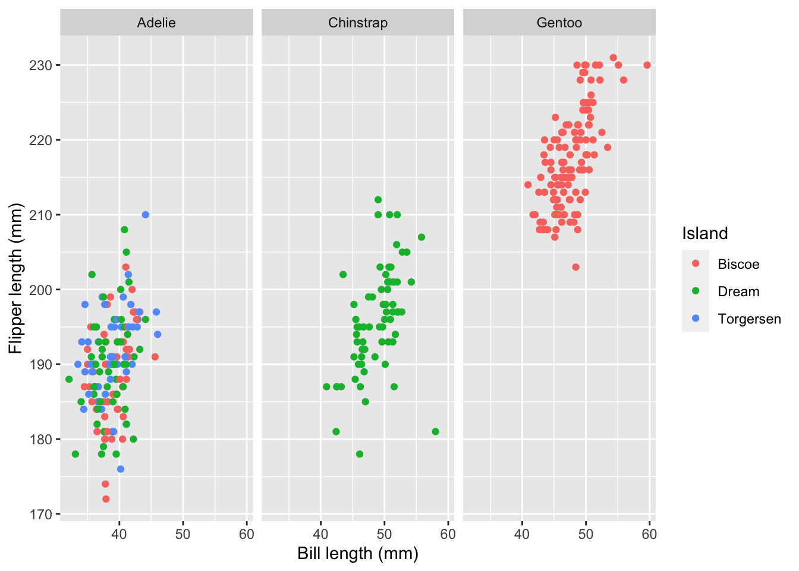

library(tidyverse)
library(palmerpenguins)
library(viridis) # we'll use to customize colorsVisualizing various types of data
STA 199
Bulletin
- Join GitHub organization if you haven’t already
- This
aeis not due for a grade, but when drop/add ends, aes will be graded for completion. You turn in youraesby committing to GitHub.
Getting started
Clone your ae-3-username repo from the GitHub organization. If you don’t have an ae-3-username repo, you have not yet accepted your course org invite. You can still clone the public repo but note that you won’t be able to push.
Today
By the end of today you will…
- create and interpret scatter plots, bar plots, stacked bar plots, facet plots and be able to look up and use other ggplot geometries
Load packages
Plots
The procedure used to construct plots can be summarized using the code below.
ggplot(data = [data set],
mapping = aes(x = [x-variable], y = [y-variable])) +
geom_xxx() +
geom_xxx() +
other optionsExample: bar plot
ggplot(data = penguins,
mapping = aes(x = species)) +
geom_bar() +
labs(x = "Species", y = "Count", title = "Palmer penguin species")Example: stacked bar plot
penguins |>
filter(!is.na(sex)) |>
ggplot(mapping = aes(x = species, fill = sex)) +
geom_bar(position = "fill") +
labs(x = "Species", y = "Count", title = "Palmer penguin species")Exercise 1
- try with and without
position = "fill". What does this argument do?
Aesthetics
An aesthetic is a visual property in your plot that is derived from the data.
- shape
- color
- size
- alpha (transparency)
We can map a variable in our data set to a color, a size, a transparency, and so on. The aesthetics that can be used with each geom_ can be found in the documentation.
Here we are going to use the viridis package, which has more color-blind accessible colors. scale_color_viridis specifies which colors you want to use. You can learn more about the options here.
Other sources that can be helpful in devising accessible color schemes include Color Brewer, the Wes Anderson package, and the cividis package.
This visualization shows a scatterplot of bill length (x variable) and flipper length (y variable). Using the viridis function, we make points for male penguins purple and female penguins yellow. We also add axes labels and a title.
ggplot(data = penguins,
mapping = aes(x = bill_length_mm, y = flipper_length_mm,
color = sex)) +
geom_point() +
labs(title = "Flipper length vs bill length",
x = "Bill length (mm)", y = "Flipper length (mm)") +
scale_color_viridis(discrete=TRUE, option = "D", name="Sex")Warning: Removed 11 rows containing missing values (geom_point).If you want to change, for exaple, color or fill for all points regardless of the data, you can pass the argument color = or fill = to the geometry itself. **Properties of the plot that are based on the data must be passed to the aes() function.
Exercise 2
- Create a new code chunk and paste the code above into it. Remove the
scale_color_viridislayer. Next change the above color to"steelblue". Since you are hard-coding the color of all the points, this must happen inside the geometry not the aesthetic. On the other hand,color = sexonly works insideaes().
Exercise 3
- What will the visualization look like below? Write your answer down before running the code.
ggplot(data = penguins,
mapping = aes(x = bill_length_mm, y = flipper_length_mm,
shape = sex)) +
geom_point() +
labs(title = "Flipper length vs bill length",
x = "Bill length (mm)", y = "Flipper length (mm)") +
scale_color_viridis(discrete = TRUE, option = "D", name="Sex")A note on colors
To work with the viridis color palettes…
scale_color_viridis()to changecolorscale_fill_viridis()to changefill- argument
discrete = TRUEto use a discrete color palette - argument
discrete = FALSEto use a continuous color palette
To use your own custom color palettes, you can use scale_color_manual() and scale_fill_manual(), but more on this later.
Faceting
We can use smaller plots to display different subsets of the data using faceting. This is helpful to visualize \(>2\) variables and examine conditional relationships.
penguins |>
ggplot(aes(x = bill_length_mm, flipper_length_mm, color = island)) +
geom_point() +
facet_wrap(~ species) +
labs(x = "Bill length (mm)", y = "Flipper length (mm)", color = "Island")Warning: Removed 2 rows containing missing values (geom_point).
penguins |>
ggplot(aes(x = bill_length_mm, flipper_length_mm, color = species)) +
geom_point() +
facet_wrap(~ island) +
labs(x = "Bill length (mm)", y = "Flipper length (mm)", color = "Island") +
scale_color_viridis(discrete = TRUE)Warning: Removed 2 rows containing missing values (geom_point).ggplot activity
# code hereAdditional resources
- Find more ggplot geometries at https://ggplot2.tidyverse.org/reference/